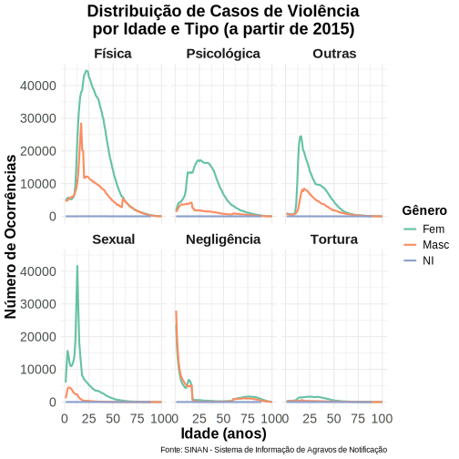
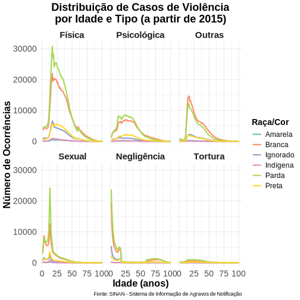
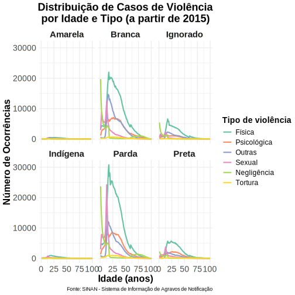

import { Inputs } from "@observablehq/inputs"
// Carrega a biblioteca Plotly.js de forma robusta
Plotly = require("plotly.js-dist@2.27.0")
// Carrega o arquivo CSV local
populacao = FileAttachment("dados_populacao.csv").csv({ typed: true })
// Extrai as colunas para arrays separados para facilitar o uso
idade = populacao.map(d => d.idade)
dados_feminino = populacao.map(d => d.feminino)
dados_masculino = populacao.map(d => d.masculino)
traces = () => [
{
x: idade,
y: dados_feminino,
mode: "lines",
name: `Feminino` ,
line: {color: '#66C2A5'}
},
{
x: idade,
y: dados_masculino,
mode: "lines",
name: `Masculino`,
line: {color: '#FC8D62'}
}
]
{
const div = html`<div style="width:1200px;height:600px;"></div>`;
// Define o layout, incluindo os títulos dos eixos
const layout = {
width: 1200, // Largura fixa
height: 600, // Altura fixa
xaxis: { title: "Idade" },
yaxis: { title: "População" },
margin: { t: 20 },
legend: { title: { text: "Clique para ocultar/exibir" } }
};
// Renderiza o gráfico inicial
Plotly.newPlot(div, traces(), layout, {responsive: true});
// Esta linha mágica garante que o gráfico antigo seja removido
// antes de um novo ser desenhado quando os sliders mudam.
invalidation.then(() => Plotly.purge(div));
// Retorna o elemento div para ser exibido na página
return div;
}Avaliação SINAN / PSE
Introdução
O Sistema de Informações de Agravos de Notificação (SINAN), é uma ferramenta do Ministério da Saúde do Brasil que tem como objetivo coletar, transmitir e disseminar dados sobre doenças e agravos de notificação compulsória. Um desses agravos se referem às violências. Semanalmente (PORTARIA Nº 1.061, DE 18 DE MAIO DE 2020) as secretarias de saúde (municipais e estaduais) devem notificar casos de violência doméstica, sexual e ou tentativa de suicídio.
Já o Programa Saúde na Escola (PSE) tem como objetivo “contribuir para a formação integral dos estudantes por meio de ações de promoção, prevenção e atenção à saúde, com vistas ao enfrentamento das vulnerabilidades que comprometem o pleno desenvolvimento de crianças e jovens da rede pública de ensino”.
Ambas ações tem relação quando se trata de violência contra a mulher, seja na identificação e registro (SINAN) ou na prevenção (PSE) que têm ações de saúde mental, que contribui para maior consciência da situação de violência e preventivas, com a ação de promoção da cultura de paz, cidadania e direitos humanos e prevenção da violência e dos acidentes. Ambos com potencial de reduzir a violência na perspectiva da vítima e do eventual agressor.
Violências
O sistema de notificação de agravo traz detalhes das violências sofridas em todo o território nacional
Por gênero
Por tipo de violência (6 maiores)
As violências contidas em ‘Outras’ são: financeira, trabalho infantil, violência policial, tráfico de seres humanos.
Por tipo e idade
Outros
Aqui está o gráfico que ilustra as ocorrências de violência:


